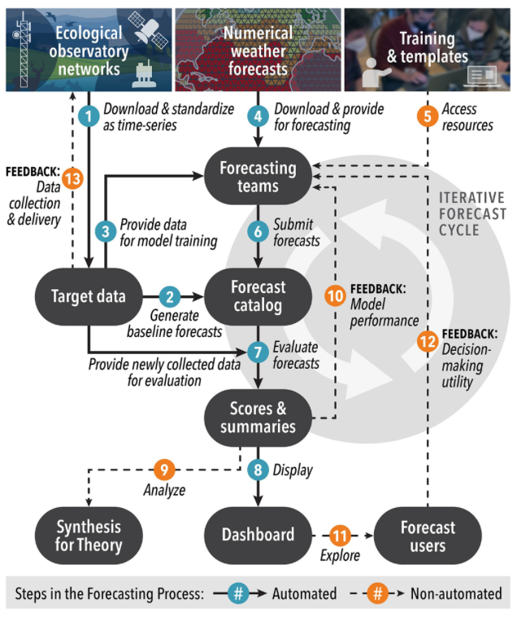

Total forecasts submitted to the EFI-USGS Challenge
1750
Most recent data for model training
2025-08-21
Number of years of data for model training
16.59
Number of variables being forecasted
1
We invite you to submit forecasts!
The EFI-USGS River Chlorophyll Forecasting Challenge is an open platform for the ecological and data science communities to forecast data from the U.S. Geological Survey (USGS) before they are collected.
The Challenge is hosted by the Ecological Forecasting Initiative Research Coordination Network and sponsored by the U.S. National Science Foundation. This challenge is co-hosted by the USGS Proxies Project, an effort supported by the Water Mission Area Water Quality Processes program to develop estimation methods for per- and polyfluoroalkyl substances (PFAS), harmful algal blooms (HABs), and 12 elements of concern, at multiple spatial and temporal scales.
Our vision is to use forecasts to advance theory and to support natural resource management. We can begin to realize this vision by creating and analyzing a catalog of forecasts from a range of ecological systems, spatiotemporal scales, and environmental gradients.
Our forecasting challenge is a platform for the ecological and data science communities to advance skills in forecasting ecological systems and for generating forecasts that contribute to a synthetic understanding of patterns of environmental predictability. Rewards for contributing are skill advancement, joy, and potential involvement in manuscripts. We do not currently crown winner nor offer financial awards.
The original NEON forecasting challenge has been an excellent focal project in university courses and this EFI-USGS challenge could be used as classroom projects as well.
Total forecasts submitted to the EFI-USGS Challenge
1750
Most recent data for model training
Number of years of data for model training
16.59
Number of variables being forecasted
1
Our platform is designed to empower you to contribute by providing target data, numerical weather forecasts, and tutorials. We automatically score your forecasts using the latest USGS data. All forecasts and scores are publicly available through cloud storage and discoverable through our catalog.

Figure from Thomas et al. 2023
eco4cast.initiative@gmail.com and jzwart@usgs.gov
Thomas, R. Q., Boettiger, C., Carey, C. C., Dietze, M. C., Johnson, L. R., Kenney, M. A., et al. (2023). The NEON Ecological Forecasting Challenge. Frontiers in Ecology and the Environment, 21(3), 112–113. https://doi.org/10.1002/fee.2616
We thank the EFI community for feedback on the design of the Challenge. This material is based upon work supported by the National Science Foundation under Grant DEB-1926388.
Page last updated on 2025-08-21